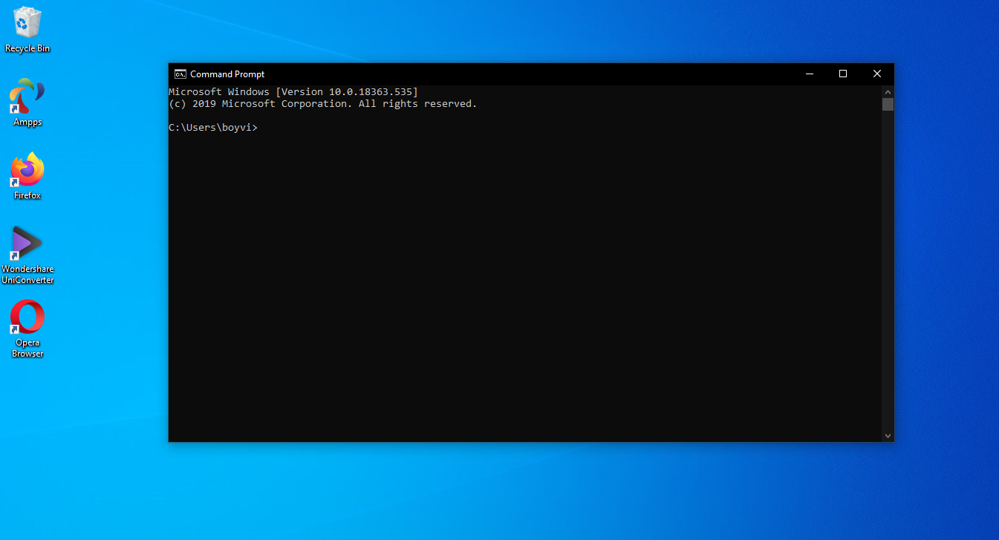
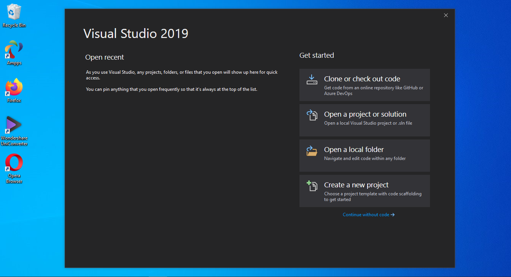
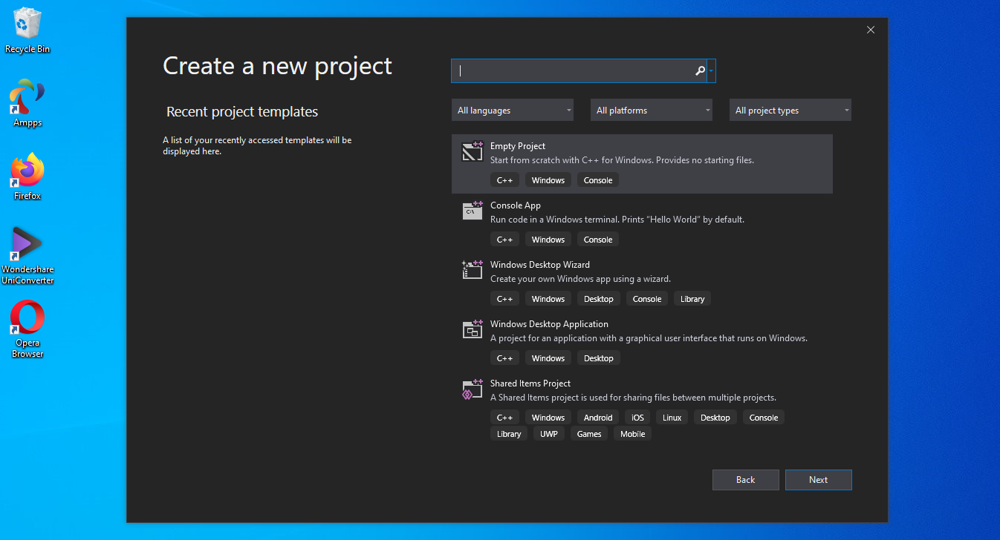
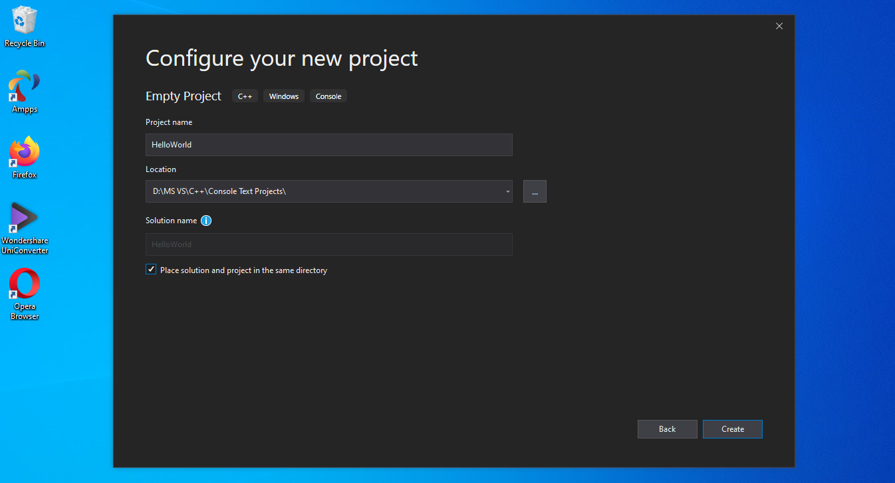

Trước khi chúng ta viết chương trình đầu tiên, chúng ta cần biết cách tạo ra chương trình mới bằng IDE. Trong bài học này, chúng ta sẽ học cách làm điều đó cùng với cách biên dịch và thực thi chương trình.
Project
Để viết một chương trình trên IDE, việc đầu tiên là tạo một project mới. Project là nơi mà bạn chứa file source code (.cpp), hình ảnh, âm thanh, video, file dữ liệu,... Khi bạn biên dịch một chương trình, tất cả file .cpp trong project sẽ được biên dịch và liên kết với nhau. Project cũng sẽ lưu các setting của IDE, compiler, linker của mỗi chương trình. Do đó, khi bạn mở lại project sẽ không cần phải setting lại. Một project chỉ cho một chương trình, nếu bạn muốn viết một chương trình mới thì bạn phải tạo một project mới.
Console project
Trước khi bạn tạo một project, bạn sẽ phải lựa chọn loại project nào. Tất cả các project trong chuỗi hướng dẫn C++ này đều là console project. Console project là loại project mà chúng ta sẽ tương tác với máy tính thông qua màn hình console của hệ thống. Ví dụ trên Window chính là Command Window.
Dưới đây là hình ảnh cửa sổ console của Window:
Mặc định ứng dụng console sẽ không có graphical user interface (GUI), tức là nó chỉ có thể in text ra console, nhận input từ người dùng thông qua bàn phím. Bạn không thể chạy các chương trình về đồ họa trên console. Điều này rất tốt cho việc mới bắt đầu với C++, tất cả đều tối giản, không phức tạp.
Workspace/solution
Khi bạn tạo một project, một số IDE sẽ tự động thêm project đó vào workspace hay solution. Workspace hay solution là nơi chứa các project liên quan với nhau. Ví dụ bạn tạo ra một game có hai chế độ là online và offline. Lúc này bạn sẽ tạo ra hai project khác nhau, nhưng suy cho cùng thì chúng cùng là một game nên có thể cho chúng vào một workspace.
Tuy rằng một workspace có thể chứa nhiều project nhưng hiện tại vì mới học C++, bạn nên cho mỗi workspace một project thôi.
Viết chương trình đầu tiên
Thông thường, chương trình đầu tiên của hầu hết lập trình viên khi học một ngôn ngữ mới là chương trình mang tên Hello World. Đối với C++, nó trông như thế này:
1 2 3 4 5 6 7 | #include <iostream> int main() { std::cout << "Hello world!"; return 0; } |
Tạo một project trên Visual Studio 2019
Khi bạn khởi động Visual Studio 2019, nó sẽ trông như sau:
Để tạo project mới các bạn chọn Create a new project.
Sau đó sẽ xuất hiện bảng sau:
Các bạn chọn Empty Project rồi click Next.
Tiếp theo, các bạn sẽ thấy như hình dưới đây:
Các bạn sửa tên project lại thành HelloWorld. Chọn lại đường dẫn chứa project mà bạn muốn lưu vào. Và mình khuyến khích bạn tích vào ô Place solution and project in the same directory. Sau đó click Create để tiếp tục.
Tiếp theo, các bạn làm như video dưới đây để tạo và chạy file .cpp. Phần code các bạn có thể gõ theo như trong video hoặc copy phần code ở trên nhé.
Vậy là bạn đã biết cách tạo và chạy một chương trình trên Visual Studio 2019 rồi. Đừng lo nếu bạn không hiểu mấy dòng code đó là gì. Các bạn sẽ được học chi tiết về nó ở chương tiếp theo.